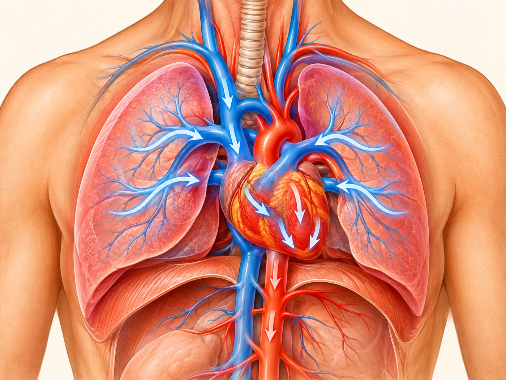
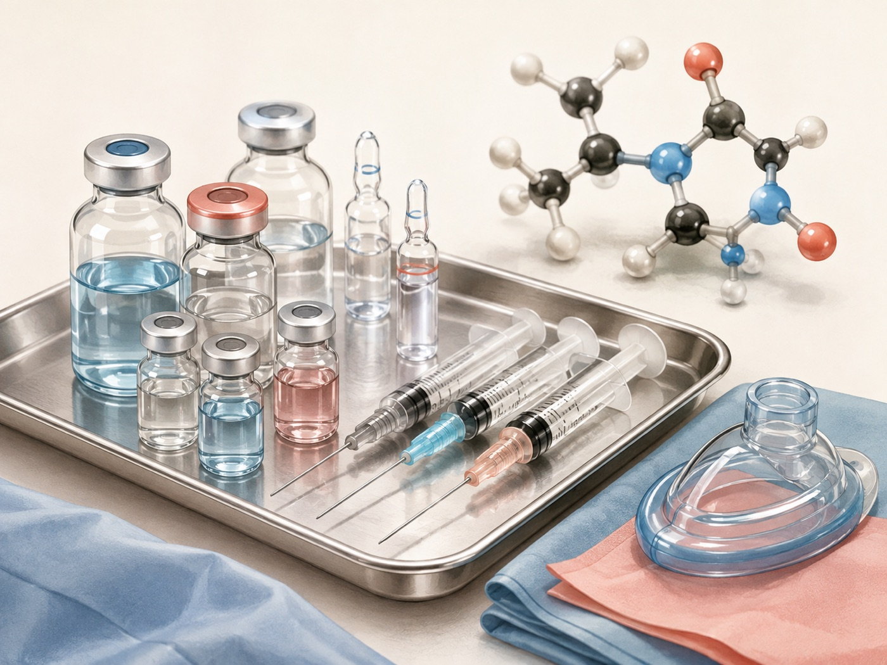
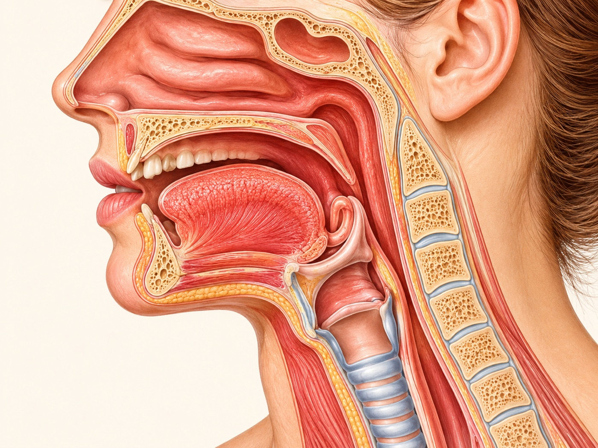
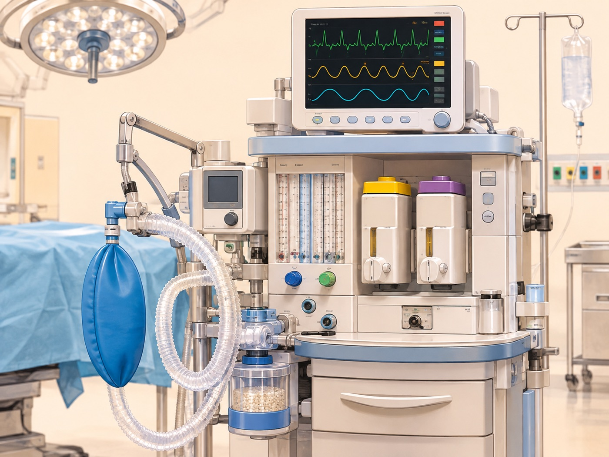
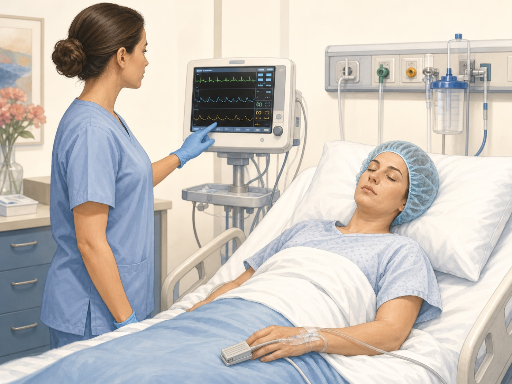

コア6巻




第6巻
モニタリング・緊急事態・回復
心電図、血圧、SpO₂、カプノグラフィ、体温、トレンド、ヒューマンファクター、緊急時のパターン、覚醒、回復室、そして申し送り。周術期を最後までたどります。
PDFを開く 3.8 MB実践特典5点


特典3
周術期緊急事態レビューパック
低酸素血症、換気不全、低血圧、アナフィラキシー、悪性高熱症、局所麻酔薬中毒（LAST）。重要な認識パターンを、同じ形式でくり返し復習できます。
PDFを開く 2.2 MB特典5
周術期チェックリスト＆レビューシート
術前評価、気道、モニタリング、術中レビュー、回復、申し送りを扱う印刷用の学習シート。学習中の疑問を整理し、見直すべきテーマを記録できます。
PDFを開く 1.7 MBおすすめの使い方
第1巻から順に読み、各巻の最後の確認問題で振り返りましょう。手早く見返したいときは特典1〜4を、症例の振り返りには特典5の学習シートを印刷して使えます。スマホ・タブレット・パソコンで開けます。端末に保存しておけば、オフラインでも見られます。
第1巻から順に読み、各巻の最後の確認問題で振り返りましょう。手早く見返したいときは特典1〜4を、症例の振り返りには特典5の学習シートを印刷して使えます。スマホ・タブレット・パソコンで開けます。端末に保存しておけば、オフラインでも見られます。